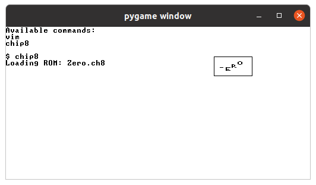

In this post, I will go over how I implemented a CHIP-8 emulator using the Jack language (from the nand2tetris course). I thought this would be a fun project since I would be programming an emulator that would run under another emulator that I had previously programmed.
The source code for my CHIP-8 emulator can be found: here.
Warning: I have not implemented the entire emulator. My goal was to make a sample CHIP-8 program run on it.
We start by defining the structure of our emulator.
class Chip8 {
// CPU:
static int I;
static int PC;
static Array V;
// RAM:
static int SP;
static Array RAM;
static Array Stack;
-snip-
CHIP-8 has 16 data registers that we have declared as the array V. It also has an address register called I. Then we also have the program counter PC the points to the address in memory that we are supposed to interpret next.
Apart from the CPU stuff, we have the stack pointer SP, an array for the memory called RAM, and another array for the stack. The stack is separate from the RAM and it is used to store return address when functions are called.
We then initialize all these variables in the "constructor" of the class. PC is set to 512 since originally the first 512 bytes were supposed to contain the CHIP-8 interpreter itself. So all CHIP-8 programs begin at memory location 512. The data register array is initialized for the 16 registers. The RAM is 4096 cells of memory and the stack is 16 cells of memory.
Finally, the bx and by values dictate the top-left corner co-ordinates of our CHIP-8 screen.
function void init() {
// CPU:
let I = 0;
let PC = 512;
let V = Array.new(16);
// RAM:
let RAM = Array.new(4096);
let Stack = Array.new(16);
// Outline:
let bx = 50;
let by = 50;
return;
}
The Jack language doesn't have an inbuilt constructors. So we will later call the `init()` function within our main function.
The CHIP-8 display is 64x32 pixels in size. Given starting co-ordinates bx and by, we use the below function to draw a 64x32 screen somewhere within the screen. For that we use the inbuilt `Screen` class in the Jack operating system.
In the below function, we only draw an outline for 64x32 anywhere within our 512x256 screen from the nand2tetris emulator. You can see the four lines being drawn.
function void drawBox() {
do Screen.drawLine(bx, by, bx+64, by); // top
do Screen.drawLine(bx, by, bx, by+32); // left
do Screen.drawLine(bx+64, by, bx+64, by+32); // right
do Screen.drawLine(bx, by+32, bx+64, by+32); // bottom
return;
}
When we are drawing within the CHIP-8 frame on the screen, we also need a translation layer for getting and setting the pixels. (We need to get pixels since CHIP-8 has a XORing functionality that requires the previous pixel state to be known).
function void setGfx(int row, int column, boolean color) {
do Screen.setColor(color);
do Screen.drawPixel(bx+column, by+row);
return;
}
function boolean getGfx(int row, int column) {
if (Screen.getPixel(bx+column, by+row)=0) {
return false;
} else {
return true;
}
}
The issue with the Jack operating system is that we don't have any filesystems. For this I have made a hacky `Disk` class that mimicks a filesystem read.
Using this, we read the file on Disk into our RAM as shown in the `loadRom()` method below.
function void loadRom() {
var int i;
let i=0;
// Hard-coded: getting ROM from disk.
while (i<144) {
let RAM[i+512] = Disk.peek(i);
let i=i+1;
}
}
We then also implement a `fetch()` method that will fetch us the current instruction at the program counter PC.
Since each memory cell is just 8 bits long, we are going to fetch the first cell, shift it by 8, then OR it with the next cell. (big-endian)
(We multiply by 256 since we don't have bitwise shift operator in Jack.)
function int fetch() {
return ((RAM[PC+1]) | (RAM[PC]*256));
}
Then we have the push and pop functions that are pretty self explanatory. Rememeber that the stack is only used for storing return addresses.
function void push(int address) {
let Stack[SP] = address;
let SP = SP+1;
return;
}
function int pop() {
let SP = SP-1;
return Stack[SP];
}
Out of the 16 data registers in the array V, the last register is a special register that is used as a carry flag. For this register, we create a getter and setter function.
function int getVF() {
return V[15];
}
function void setVF(int x) {
let V[15] = x;
return;
}
Finally, we get to the core of the emulator - the fetch, decode and execute loop. Below I have only left out a few parts of the code for a high-level overview. You can read the entire code in the link given at the beginning of this blog post.
function void execute(int opcode) {
let upper = (opcode & 61440) / 4096;
let lower = opcode & 4095;
You will observe again, that instead of using bitwise shift operations, we have to use multiplication and division due to the limitations of the Jack programming language.
Once we have extracted the "upper" (0xF000) and "lower" (0x0FFF) bits of the opcode, we are effectively going to perform a switch statement below. Since the Jack programming language doesn't have a switch statement, we will be using if-statements.
If you want to follow along, the opcode table for CHIP-8 can be found here.
Remember, some of the opcodes have not been implemented, either due to limitations of the Jack system, or because it was not necessary for the sample program.
Opcodes 00E0 and 00EE.
if (upper=0) {
// Opcode 00E0: Clears the screen.
if (lower=224) {
let i=0;
while (i<32) {
let j=0;
while (j<64) {
do Chip8.setGfx(i,j,false);
let j=j+1;
}
let i=i+1;
}
}
// Opcode 00EE: Returns from a subroutine.
if (lower=238) {
let PC = pop();
}
do Output.printString("Unimplemented upper=0, lower=");
do Output.printInt(lower);
do Sys.halt();
}
Opcode 1NNN: Jumps to address NNN.
if (upper=1) {
let PC = lower-2;
}
Opcode 2NNN: Calls subroutine at NNN.
if (upper=2) {
do Chip8.push(PC);
let PC = lower-2;
}
Opcode 3XNN: Skips the next instruction if VX == NN.
if (upper=3) {
let X = (lower&3840)/256;
let NN = (lower&255);
if (V[X]=NN) {
let PC = PC+2;
}
}
Opcode 4XNN: Skips the next instruction if VX != NN.
if (upper=4) {
let X = (lower&3840)/256;
let NN = (lower&255);
if (~(V[X]=NN)) {
let PC = PC+2;
}
}
Opcode 5XY0: Skips the next instruction if VX == VY.
if (upper=5) {
let X = (lower&3840)/256;
let Y = (lower&240)/16;
if (V[X]=V[Y]) {
let PC = PC+2;
}
}
Opcode 6XNN: Sets VX to NN.
if (upper=6) {
let X = (lower&3840)/256;
let NN = (lower&255);
let V[X] = NN;
}
Opcode 7XNN: Adds NN to VX.
if (upper=7) {
let X = (lower&3840)/256;
let NN = (lower&255);
let V[X] = (V[X]+NN) & 255;
}
Opcodes 8XXX: Bitwise and arithmetic operations.
if (upper=8) {
let X = (lower&3840)/256;
let Y = (lower&240)/16;
let switchLower = (lower&15);
if (switchLower=0) { let V[X] = V[Y]; }
if (switchLower=1) { let V[X] = (V[X] | V[Y]); }
if (switchLower=2) { let V[X] = (V[X] & V[Y]); }
if (switchLower=3) { let V[X] = (V[X] ^ V[Y]); }
if (switchLower=4) {
let sum = V[X] + V[Y];
let V[X] = sum&255;
if (sum>255) {
let V[15] = 1;
} else {
let V[15] = 0;
}
}
if (switchLower=5) {
let sum = V[X] - V[Y];
let V[X] = sum & 255;
if (sum<0) {
let V[15] = 0;
} else {
let V[15] = 1;
}
}
if (switchLower=6) {
let V[15] = V[X]&1;
let V[X] = V[X]/2;
}
if (switchLower=7) {
let sum = V[Y] - V[X];
let V[X] = sum & 255;
if (sum<0) {
let V[15] = 0;
} else {
let V[15] = 1;
}
}
if (switchLower=14) {
let V[15] = (V[X]/128)&1;
let V[X] = V[X]*2;
}
}
Opcode 9XY0: Skips the next instruction if VX != VY.
if (upper=9) {
let X = (lower&3840)/256;
let Y = (lower&240)/16;
if (~(V[X]=V[Y])) {
let PC = (PC+2);
}
}
Opcode ANNN: Sets I to the address NNN.
if (upper=10) {
let I=lower;
}
Opcode BNNN: Jumps to the address NNN plus V0.
if (upper=11) {
let PC = V[0] + lower - 2;
}
Opcode CXNN: Sets VX to the result of a bitwise and operation on a random number and NN.
(Since we don't have an RNG function, for now we are using a hard-coded value.)
if (upper=12) {
let X = (lower&3840)/256;
let NN = (lower&255);
let V[X] = (rand&NN);
}
Opcode DXYN: Draws a sprite at coordinate (VX, VY).
if (upper=13) {
let X = (lower&3840)/256;
let Y = (lower&240)/16;
let N = (lower&15);
let collisionFlag = false;
let j=0;
while (j<N) {
let currentByte = RAM[I+j];
let i=0;
while (i<8) {
let currentBit = (currentByte/Math.twoToThe(7-i)) & 1;
let actualBit = Chip8.getGfx(V[Y]+j, V[X]+i);
if ((currentBit=1) & (currentBit=actualBit)) {
let collisionFlag = true;
}
if ((currentBit^actualBit)=1) {
do Chip8.setGfx(V[Y]+j, V[X]+i, true);
} else {
do Chip8.setGfx(V[Y]+j, V[X]+i, false);
}
let i=i+1;
}
let j=j+1;
}
if (collisionFlag=1) {
let V[15] = 1;
} else {
let V[15] = 0;
}
}
Opcodes FXXX:
if (upper=15) {
let X = (lower&3840)/512;
let switchLower = lower&255;
if (switchLower=7) {
let V[X] = delayTimer;
}
if (switchLower=21) {
let delayTimer = V[X];
}
if (switchLower=24) {
let soundTimer = V[X];
}
if (switchLower=30) {
let I = I+V[X];
}
if (switchLower=41) {
let I = V[X]*5;
}
if (switchLower=51) {
let RAM[I] = (V[X]/100)%10;
let RAM[I+1] = (V[X]/10)%10;
let RAM[I+2] = V[X]%10;
}
if (switchLower=85) {
let i=0;
while (i<16) {
let RAM[I+i] = V[i];
let i=i+1;
}
}
if (switchLower=101) {
let i=0;
while (i<16) {
let V[i] = RAM[I+i];
}
}
if (~(switchLower=21)) {
do Output.printInt(switchLower);
do Sys.halt();
}
}
At the end of the loop, we increment the program counter by two since one memory cell is 8-bit in size, and one instruction is 16-bit.
let PC = PC+2;
So that was the entire code. I was able to run the `zero.ch8` program which is the four letters "ZERO" bouncing up and down within the CHIP-8 screen. (albeit very slowly)
